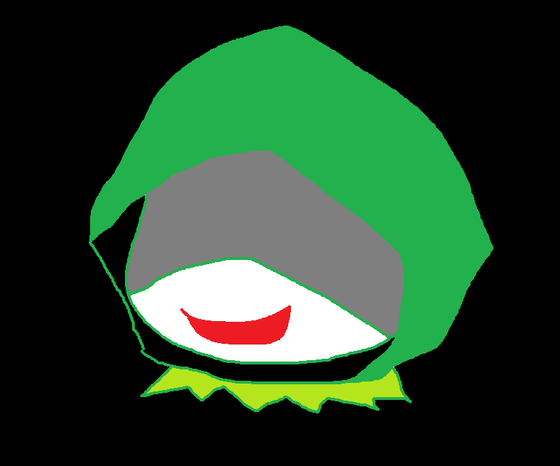
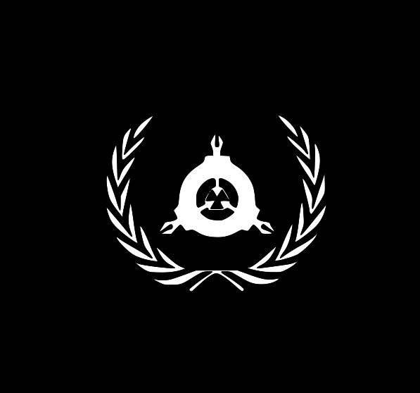
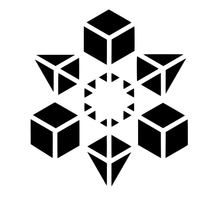
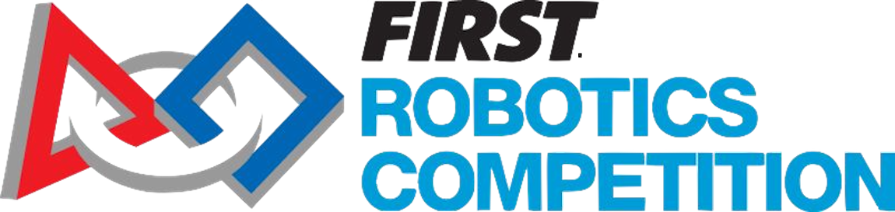
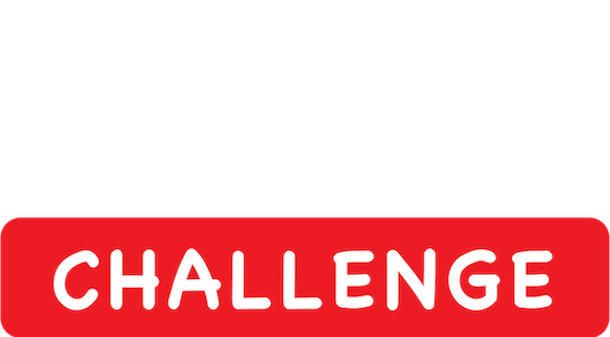
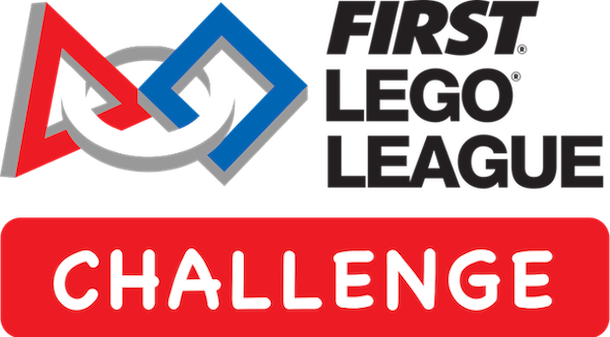

Team Dataチーム情報
チーム名
Yukikaze Technology
構成人数
11
活動地
札幌市
結成年
2020
Category部門紹介

鈴木 瀬那
こんにちは。運営部門代表の鈴木瀬那と申します。運営ではチームの基盤となる活動を行っており、現在メンバー3名で構成されています。具体的にはパートナー・スポンサー関連のタスク全般、スケジュールの管理などを担っている部門です。運営は一見、FRCの象徴的な巨大なロボットとは無縁のように思えるかもしれません。しかし、運営が機能しなければそのロボットの製作・運送はできません。そして、多くの責任が我々にはあります。メンバー・そして支えてくださっている周りの方のために、Yukikaze Technologyの中枢機関としての自覚を持って活動していきます。
- 鈴木 瀬那
- 伊藤 原野
- 永井 慧
構成
藤井 亮太
FRCの活動がスタートしました。今シーズン私達が目指すのは世界大会への出場です。
一つ一つの任務を着実に遂行していくことによって、堅実な運営を行い、チームメンバーが安心して活動できるような場を作っていきたいと考えています。
世界大会へ向けてチームの総力を結集し、目標に向かって取り組んでまいります。
- 藤井 亮太
- 太田 藏之介
- 小泉 健太
- 小西 恭平
- 古野 貴一
構成

小倉 寛史
YukikazeTechnology副代表の小倉寛史です。
YukikazeTechnologyの多くのメンバーは、FLL(同じくFIRSTが開催する)のチームの旧メンバーによって構成されています。私は小中と、そのFLLに関わることはできませんでした。しかし今になって僕がFRCに関われる。これはいつも彼らの努力を離れたところから眺めていた私にとって、数年間達成できなかった目標をついに達成できるということです。このFRCというプロジェクトは、私の学生生活の中で一番力を注ぎたいものになるだろうと確信しています。
しかし、活動は甘いものではないでしょう。例年と比べ、さらにです。それを熱意とチームワークで応えていく。YukikazeTechnologyは、それを達成することのできるチームだと私は思います。チーム登録という壁の先にも、さらなる壁が私たちを待ちうけていることと思いますが、精一杯努力していきます。
- 小倉 寛史
- 浅野 颯太
- 岩本 兜矢
構成
Performance実績
※FLLの実績
- 全国大会出場
- 地区大会総合9位
- 全国大会出場
- 地区大会総合準優勝
- 全国大会総合準優勝
- 世界大会Project部門「Innovative Solution Award」優勝
- 世界大会Robot部門「 HSBC Special Award」受賞
- 地区大会プロジェクトアワード賞受賞
- 地区大会総合準優勝
2021年ど
2022年ど
2023年ど
2024年ど
Philosophy理念
STEAM教育とは、”Science”(科学)、 ”Technology”(技術)、 ”Engineering”(工学)、"Arts"(芸術),”Mathematics”（数学）を総合的に教育する方法です。これが日本中に浸透し、FIRSTプログラムを普及させれれば、グローバル化やIoT社会で通用する力を身に付けることができます。
学校教育では完全に補いきれないプレゼンテーション能力や、見やすい資料作りの力などの今後の社会で活用するスキルを体験会などを通して人々に無償で提供します。
FIRSTの大会に参加することで、英語力や計算力、論理力がつき、STEAM教育の浸透につながります。しかし、チームを作ろうと決断しても予選がハワイ予選大会なのでハードルがどうしても高くなります。国内28チーム、海外6チームで第一回日本予選大会を実施することができます。
About Logoロゴについて
覚えてもらえやすいようにシンプルで親しみやすいロゴを目指して チーム全員で作成しました。私たちの地元、北海道にちなんで北国の象徴である雪の結晶と、幾何学的なテクノロジーのイメージを掛け合わせました。

What's "FLL Challenge"?ＦＬＬとは？



FLL Challengeとは
FLL Challengeは9歳～16歳の青少年を対象とした世界最大規模の国際的なロボット競技会です。1998年に米国のNPO法人「FIRST」とレゴ社によってに設立され、日本では2004年から開催されています。毎年世界大会が世界数ヶ所で行われ各国の代表チームが参加しています。
競技は自律型ロボットで2分30秒の間にミッションの攻略を目指す『ロボットゲーム』と「イノベーションプロジェクト」「ロボットデザイン」「コアバリュー」の3分野の『プレゼンテーション』で構成されます。「イノベーションプロジェクト」では毎年大会から出されるテーマに対する研究活動を行い、大会では専門家の前で問題解決策を提案します。
子どもたちが科学技術に親しみながらチームで取り組むFLLの活動は、プログラミング教育、アクティブ・ラーニングの実践であり、21世紀型スキルを身につけるのに適した教育プログラムとして世界中の教育機関でで導入されています。
FLLとは
2020年まではFLL ChallengeはFLL （FIRST® Lego® League）と言う名称でした。私達のメンバーの内5名は、「North Japan」として2016年度から2019年度まで参加していて、メンバーの半数が高校受験のために2020年に引退しました。しかし私立中学に通い高校受験がない人や、より高みを目指す人が集まり、新メンバーを迎えた生まれ変わった新チーム「Yukikaze Technology」は結成されました。